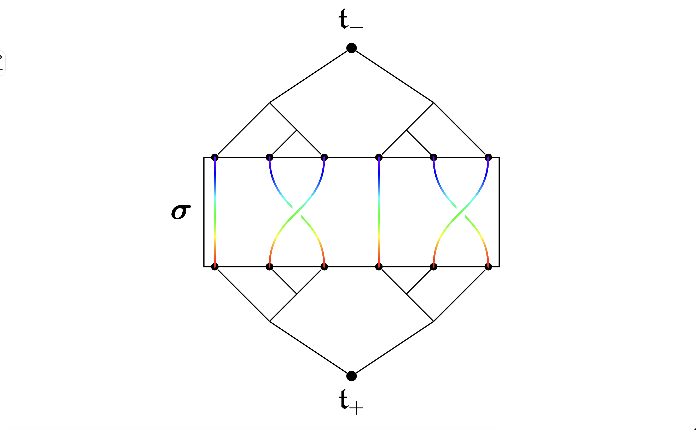
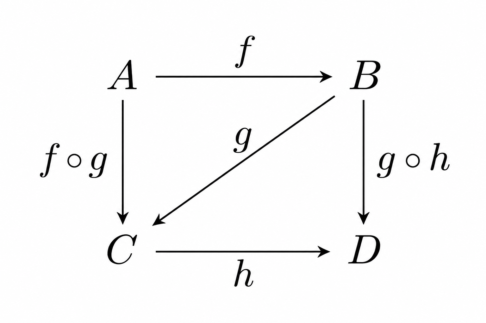

Cayden J. Osborne
Welcome! I am currently a mathematics student at University at Albany, SUNY , pursuing a combined B.S./M.A. in Mathematics, with an expected completion of May 2027. I am currently working on my master's thesis and independent study under the supervision of Dr. Matthew Zaremsky . The aim of my thesis is to present an exposition of a modern proof that Thompson's group \(V\) is of type \(F_\infty\).
My research interests currently lie in:
- Geometric Group Theory;
- Algebraic Number Theory;
- Algebraic Topology;
- Anything that relates to Algebra.
Currently, the topic of category theory has caught my eye. Outside of math, I like hiking, spending time in nature, and listening to music.
Mathematical Interests
Below are two mathematical diagrams reflecting areas of mathematics that interest me: geometric group theory and category theory.


research
Current research and selected mathematical projects.
I am studying the finiteness properties of Thompson's group \(V\), with the goal of presenting a modern proof that the group is of type \(F_\infty\).
A survey of atmospheric neutrinos, including their properties, detection methods, and the experiments used to study them. The project also discusses applications and future directions in neutrino research.
PDFApplied the divergence theorem to establish Newton's shell theorem and investigate gravitational fields.
PDF